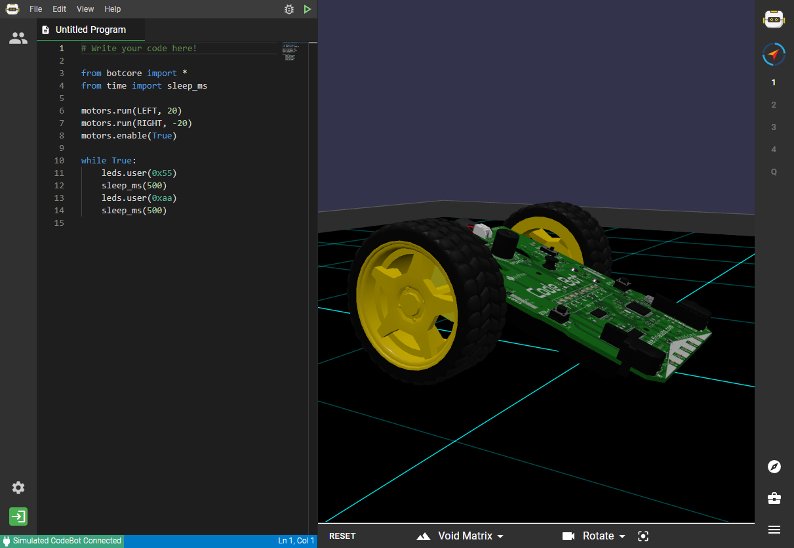

簡要說明 2022 Fall 與計算機程式及電腦輔助設計與實習課程的相關規劃與期程安排.
課程網站
目前將課程網站放在同一個倉儲, 相關連結可以參考 https://mde.tw/blog/pages/about/index.html.
現在 mde.tw 的倉儲容量大約 800 MB, 每次在新的環境重新 git clone --recurse-submodules 會有一些負擔, 但若使用隨身碟進行逐次改版, 應該還好.
Fall 學期上的課程為大一的計算機程式, 還有大二的電腦輔助設計與實習.
計算機程式是從網頁上的 Python 語法教起, 採用的解譯器為 Brython, 終極目標是希望能夠利用 Brython 與 Three.js, 開發出類似 https://sim.firialabs.com/ 的網際套件, 直接在瀏覽器上透過 Brython 程式控制 Robot 模擬場景.

計算機程式課程學員可以直接從 https://mde.tw/content/Python.html 進入, 直接在線上練習 Brython 所支援的 Python 語法. 由於是在瀏覽器上, 必須要對 HTML 與 Javascript 有些基本認識, 才能充份使用 Brython.
學員在計算機程式課程所寫的程式, 被要求要設法放入自己管理的 Github 倉儲, 而倉儲是採用 Github Classroom 建立, 並且直接導入 cmsimde 子模組. 假如要將個人倉儲 git clone 到近端電腦上改版, 就必須使用:
git clone --recurse-submodules 加上擷取倉儲內容的網路_URL 或 SSH 連線字串
假如第一階段只用 git clone, 而沒有 --recurse-submodules 附屬指令選項, 則可以在取下主倉儲內容後, 以 git submodule update --init --recursive 取下所有子模組的內容.
光是要能以 git 取下倉儲檔案, 使用者的近端電腦就必須能夠執行 git, 可以使用操作系統安裝版, 或者使用課堂上所推薦的可攜程式套件中的 portablegit.
至於要使用 https 或 ssh 協定進行 git, 主要牽涉到隨後改版 push 時的權限驗證, 因為只有具備倉儲管理權的用戶, 才能對 Github 上的倉儲進行改版.
網路協定
所有網路上的應用, 都牽涉網路協定, 以 https 而言, 所使用的網路協定就是 http, 也就是超文件傳輸協定. 而 https 就是在利用超文件傳輸的過程中, 將傳送的資料加以加密編碼後, 直到接收後再解開, 是相較於 http 嚴謹安全的傳送.
以 https 擷取 Github 倉儲的時候, 需要在 URL 中加上帳號 token, 而這串連線驗證身分用的字串, 還帶有權限範圍, 以及時效, 使用者可以在 Github 帳號設定頁中取得.
由於 Github 目前只支援 IPv4 協定, 而在電腦輔助設計室為了擴大可用頻寬, 採用 IPv6 協定, 要讓 IPv6 協定下的 git 指令, 正確與 Github 倉儲連線, 必須透過 Proxy server (使用 Squid), 而且是能同時支援 IPv4 與 IPv6 協定的代理主機. 以 https 對 git 指令的 Proxy 設定, 位於可攜程式環境中的 home_ipv6 目錄下, 檔案名稱為 .gitconfig, 使用者執行 git config 後的設定就是存入 home_ipv6/.gitconfig 檔案中.
至於 git 所使用的 SSH 連線協定, 在 Windows 操作系統, 可以透過 Putty session 設定達成, 其中的 session 包含連線到 github.com, 所使用的 SSH 認證用 private key 位置, 還有 Proxy 設定.
上述將使用 cmsimde 作為子模組的倉儲取至近端電腦的目的, 共有兩個: 進行改版以及進行協同.
在近端進行倉儲內容改版的意思是, 利用 Python 與必要模組, 可以執行 cmsimde 網站中的動態系統, 其中所需要的模組為:
flask flask_cors bs4 lxml pelican markdown leo pyopenssl
flask 與 flask_cors 是網際框架, 安裝 flask_cors 的目的是讓網站可以跨網域擷取資料.
bs4 是用來對超文件分頁的工具, 讓 cmsimde 中的 config/content.htm 可以根據 H1, H2 與 H3 的標題進行分頁.
lxml 是將動態網頁內容轉為靜態網頁內容時所需要的解讀模組.
pelican 是用來建立網誌的工具, 可以將使用者所寫的 Markdown 轉為網誌格式的內容.
markdown 是用來解讀 .md 檔案的工具.
leo 是大綱管理模組, 用來作為編寫網誌或簡報的工具, 也可以當作程式開發的 IDE.
pyopenssl 則是在動態網頁中, 以程式方法伺服靜態網頁內容時, 建立 SSL 連線時所需.
Replit 作為應用程式伺服器
除了將 Github 上的倉儲, git clone 到近端改版外, 也可以利用 Replit, 直接在瀏覽器上以 wsgi 模式, 執行 cmsimde 的動態網站. 如此可以免除在近端執行動態網站所需要的網路協定與 git 指令. 只不過 Replit 只給免費帳號 500 MB 的儲存空間, 過大的倉儲並不適合採用 Replit 執行 cmsimde 的動態網站.
使用 Replit 執行 cmsimde 的過程, 需要在 shell 執行:
git submodule update --init --recursive
目的是取下子模組資料, 因為 Replit 與 Github 的連結, 似乎只使用 git clone, 並沒有加上 --recurse-submodules, 使用者必須手動執行.
另外則是利用 pip install flask flask_cors bs4 lxml pelican markdown 安裝 cmsimde 所需模組, 與上述近端改版的差異是: 無需安裝 leo 與 pyopenssl, 因為系統是在雲端 Replit 的主機上執行, 目前還無法在 Replit 系統上使用 leo, 也無需自行配置近端伺服器的 SSL.
一旦將動態網站配置到 Replit 之後, 可以將動態網頁改版內容, 同步到對應的 Github 倉儲, 主要利用倉儲的 Github Pages 伺服靜態網頁.
電腦輔助設計與實習
What is CAD software?
From: https://formlabs.com/blog/cad-software/
- CAD (computer-aided design) is the tool that brings a design to a manufacture-ready state. It is the all-important software environment where designers and engineers translate concept sketches into three-dimensional models which are then visualized, optimized, simulated, and can be directly 3D printed or produced with traditional manufacturing tools.
- Computer-aided design (CAD) is a method to digitally create 2D drawings and 3D models that has replaced manual drafting across a wide range of industries. CAD software tools empower designers to explore design ideas, modify designs easily, visualize concepts through renderings, simulate how a design performs in the real world, draft documentation, share designs for feedback, and more—facilitating innovation and allowing companies to get to market faster.
Benefit of CAD
From: https://formlabs.com/blog/cad-software/
The benefits of CAD integration across the product development process are:
- Rapid concept development: Envisioned designs can be accurately sketched for early visualization and 3D printed rapid prototypes.
- Specialization: Spreading CAD throughout the organization develops specific knowledge which results in a common understanding of how to bring specific parts to the manufacturing-ready stage.
- Visualization: Clients and target customers can be informed and impressed with cutting-edge 3D renderings, animations, and virtual reality experiences of works-in-progress.
- Optimization: Faults and imperfections can be detected and optimized much faster in a virtual environment. Gaps between design intent and manufacturing reality are bridged using accurately toleranced mechanical drawings.
- Rapid manufacturing: Products can be brought to production faster using CAM systems and rapid manufacturing technologies.
Uses of CAD
From: https://formlabs.com/blog/cad-software/
Traditionally, CAD software systems lead to the generation of a set of mechanical drawings that inform the factory how to produce a product, along with the manufacturing technology, materials, mold finishes, and tolerances required. Nowadays though, they do much more:
- Creating photorealistic renderings for internal presentations and marketing collateral
- BOM (Bill of Materials) integration for managing all parts in an assembly as well as cost estimation.
- Direct import of standard mechanical parts and/or ornamental elements from linked databases of various suppliers
- Deriving an injection mold design from a part after setting up some basic parameters
- Assisting the design and simulation of sheet metal components, welded frames, and composite parts
- Stress and buckling (屈曲) analysis (FEA), drop test simulation, and generative design (GD)-generated suggestions for optimization
- Mold flow analysis for injection molding
- Thermal, vibration, and aerodynamics analysis
- Motion analysis and interference detection for assemblies
- Ergonomics analysis with posable 3D manikins
- Surface flattening for die-cut (沖壓剪切) drawings based on a 3D model
- Nesting algorithms (嵌套演算) for optimizing the layout of parts on the 2D bed of a laser cutter or 3D printer
- Automatic gemstone prong settings for jewelry design
- Simulation of fabrics (編織物) and inflatables (充氣件)
- PLM systems to manage assemblies, part version history, releases, engineering changes, file formats, metadata, cost estimation, vendors and suppliers, collaborations, access control, revision control, manufacturing process planning, and related part files, documents, and presentations
- Advanced Geometric Dimensioning and Tolerancing (GD&T) in order to convey design intent and optimize the manufacturing process.
- Direct import of 3D scanning data for reverse engineering
- Preparing models for 3D printing
- Texture mapping (紋理映射) and painting for use in art, video games, movies, and full-color 3D printing
Types of CAD Software Systems
From: https://formlabs.com/blog/cad-software/
- Polygonal modeling - 代表套件 Blender
- Solid modeling - 代表套件 Solidworks, AutoDesk Inventor, Solid Edge, NX, Creo, Catia, Onshape
- Surface modelers - 代表套件 AutoDesk Alias, Rhino, 以及高端 CAD: NX, Creo, Catia
- Parametric modelers - 代表套件 Solidworks, AutoDesk Inventor, Solid Edge, NX, Creo, Catia, Onshape
- Generative design - 代表套件 AutoDesk Fusion360, Creo, Ansys Discovery, nTopology, Catia, Altair Inspire, NX,
相較於計算機程式所有上課的內容均為自由開源軟體, 電腦輔助設計與實習課程所採用的 NX 與 Coppeliasim 則分別是商用套件與教育開源工具.
下載 NX12.0.2.9_lite_cad2022.7z (for @gm users only, 1.20 GB, 解開後 6.24 GB) / 下載 NX12.0.2.9_lite_cad2022 for @nfu)
2022 Fall 所使用的 NX 為 2027.3401 版:
下載 NX2027.3401_lite_cad2022.7z (for @gm users only, 1.97 GB, 解開後 7.49 GB) / 下載 NX2027.3401_lite_cad2022.7z for @nfu
下載 NX2027.3401_cad2022.7z (for @gm users only, 8.02 GB, 解開後 28.32 GB) / 下載 NX2027.3401_cad2022.7z for @nfu
下載 NX2007_documentation.7z (for @gm users only, 2.18 GB, 解開後 2.86 GB) / NX2007_documentation.7z for @nfu, 使用時執行 start_static.py 後, 以瀏覽器 http://localhost:7443 開啟, 或直接在 http://c1.cycu.org:88 開啟.
Coppeliasim 所使用的版本則為 4.3.0 rev12:
下載 CoppeliaSim 4.3.0 rev12.7z (for @gm users only) / 下載 CoppeliaSim 4.3.0 rev12.7z for @nfu
本學期的電腦輔助與實習課程, 零組件繪圖的部分將從 design day one (或 http://c1.cycu.org:88) 的練習開始. 其中包括觀看各英文教學影片.